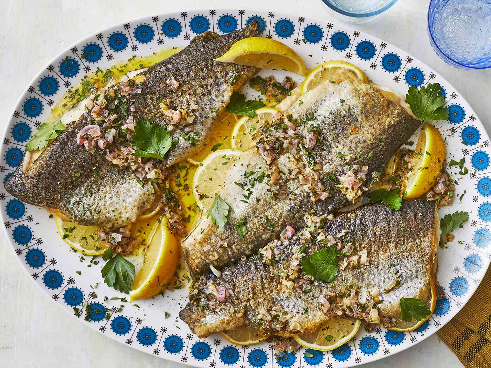

Trout Meunière

Description:
Trout meunière is the lightest, freshest, most clean way to enjoy fish I know of. It's coated and pan-fried golden brown and topped with a lemony sauce. Classic, easy, and delicious.
Ingredients:
- 4 (6 ounce) fillets boneless, skin-on rainbow trout fillets, patted dry
- ¾ teaspoon kosher salt, divided
- ½ teaspoon finely ground black pepper
- ½ cup all-purpose flour
- 4 tablespoons ghee (clarified butter)
- 6 tablespoons unsalted butter
- 2 tablespoons finely chopped shallot
- 3 tablespoons fresh lemon juice
- 3 tablespoons finely chopped fresh flat-leaf parsley
- lemon wedges, for serving
Steps:
- Preheat the oven to 200 degrees F (93 degrees C). Line a rimmed baking sheet with parchment paper and set aside.
- Season trout fillets evenly with 1/2 teaspoon salt and pepper. Lightly dredge each fillet in flour, shaking off excess flour.
- Heat ghee over medium-high in a large skillet. When butter shimmers, add fish fillets skin-side down, cooking in batches if necessary. Cook for 2 to 3 minutes, flip, and continue cooking until the outside is lightly golden brown, and fish is just cooked through and opaque, 1 to 2 minutes. Remove cooked fish to the prepared baking sheet and place in the preheated oven to keep warm.
- Pour excess ghee or clarified butter from skillet; wipe skillet clean. Add unsalted butter and shallot to the skillet and cook briefly over medium heat until butter is melted and shallot has softened a bit, about 1 minute. Stir in lemon juice and season with remaining 1/4 teaspoon salt. Allow mixture to cook for about 30 seconds. Remove from heat, and stir in parsley.
- Place fish fillets on plates or a platter; top with sauce from skillet and serve immediately with lemon wedges on the side.
Link to AllRecipes
Return to Homepage